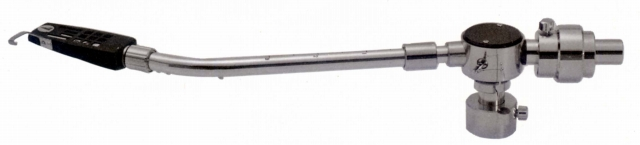
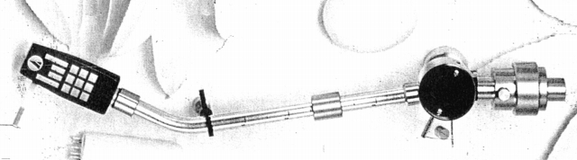

AT-1005�U


■価格 8,800円
■型式 スタティックバランス型
■全長 323�o
■実行長 240�o
■オーバー・ハング 15�o
■針圧範囲 0〜3.0g 0.5gステップ
■アーム高さ 44〜70�o
■アームベース穴 17�o
■トラッキングエラー 最大1.30゜
■アンチスケートディバイス あり
■アームリフター なし
■ラテラルバランサー なし
■カートリッジ自重 5〜22g(専用シェル自重8.5g)
■線間容量 80pF
■発売 1969年9月
■販売終了 1979年
■備考 ヘッドシェル S-8型
垂直軸受 ピボット・ベアリング
水平軸受 ラジアル・ボール
価格は1973年頃のもの
ロングセラー機であり、1970年代後半まで販売が続いた。
1978年10月版カタログでは13,400円。
スペアシェル S-8型 1,300円
専用カウンター・ウェイト 1,500円
専用アンチスケート・ウェイト 500円
専用アームベース 750円
専用アームレスト 500円
またAT-L2という名称の専用アームリフトも存在していた。
テクニカのインデックスへ